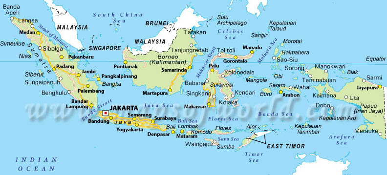
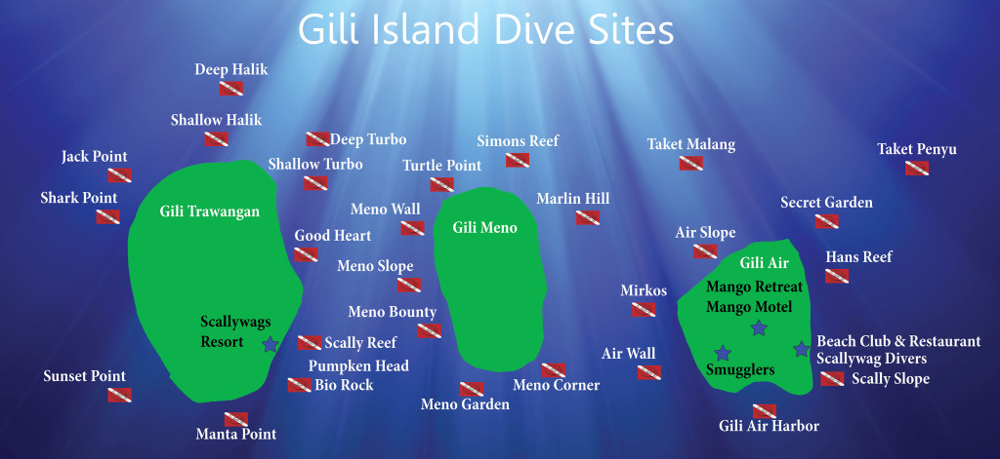
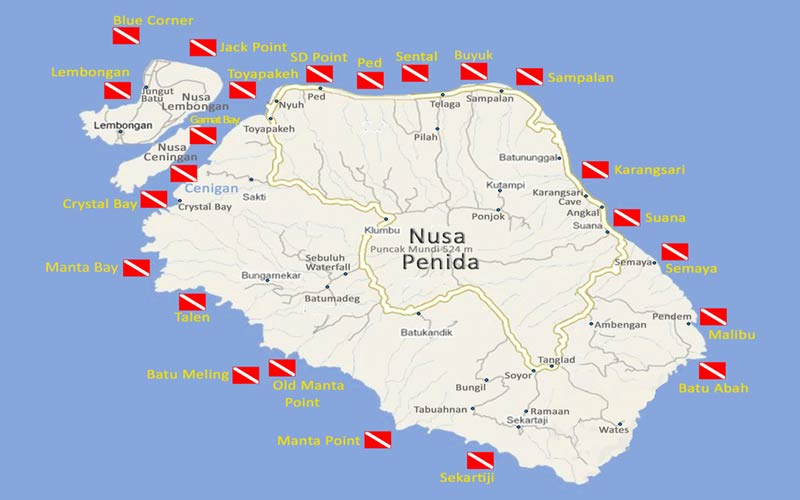
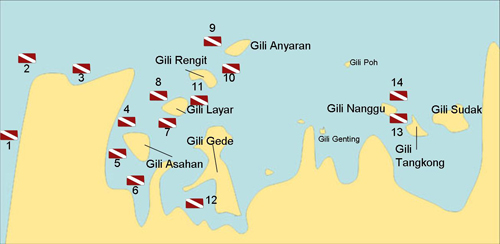
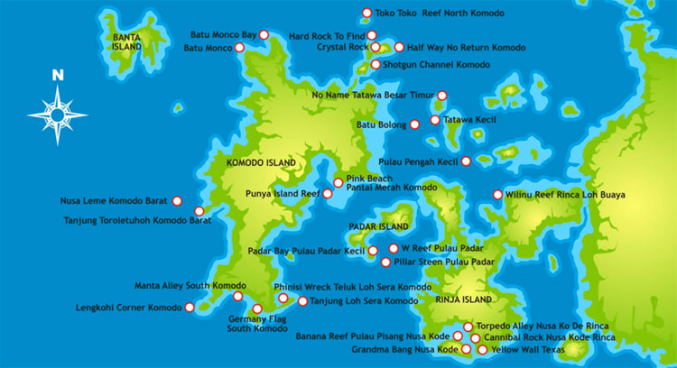
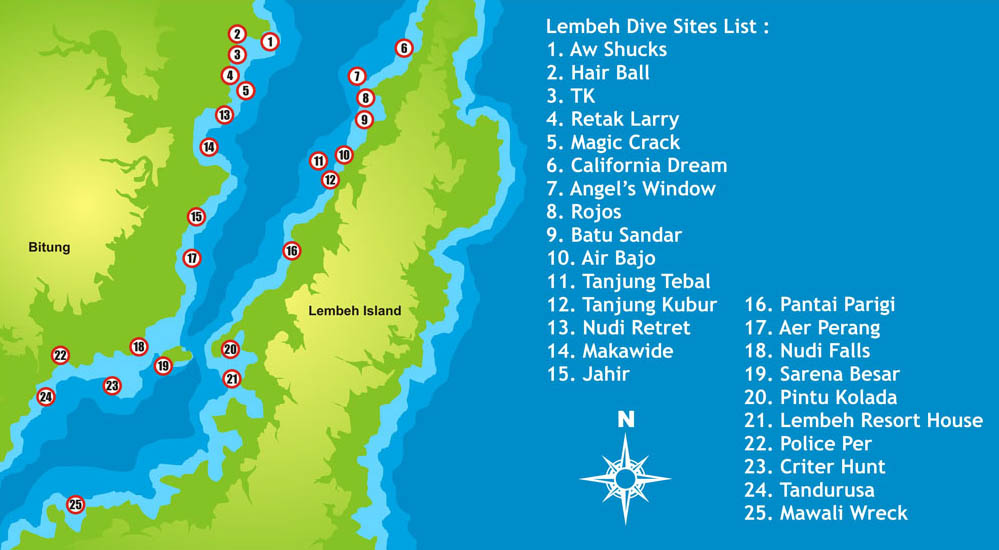
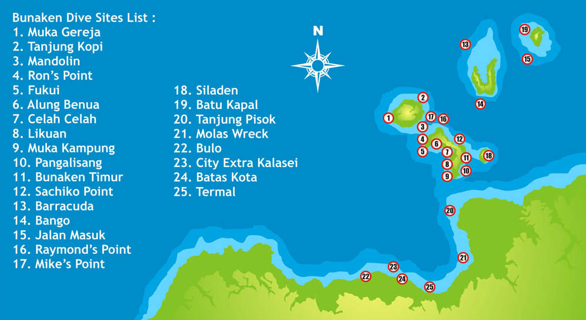

... The dive bar ...


Indonesia
Interesting links


Indonesia, the land of the many
I’ll be honest: I am extremely biased about Indonesia. I have worked several years in this dive paradise so I had lots of time to go and explore a certain amount of the 17.500 islands in this country.
To start with, Indonesia lies in the coral triangle. The Pacific Ocean comes from the east, bringing it’s warm water. The Indian Ocean touches the west side with its colder waters. Because of these two oceans, there is a big change of nutrients and water making it very good for corals to grow and fish to flow.
On the other hand, it can also deliver strong currents. Depending on where you go, you should be aware that bringing a reef hook maybe isn’t a bad idea…
Indonesia is big! It will take some time to get where you need to be. Make sure you plan good in advance. The domestic flights aren’t always on time (ahum ahum). Try to avoid Surabaya airport (delays) and Lion Air/Wings air (delays and a weird transit system). Pay some more money and fly Garuda.
Indonesia is the biggest Muslim country in the world. You won’t notice in Bali but if you go diving somewhere else, check the dates for Ramadhan. The dive regime is changed or diving is suspended for a day. If you go diving in Bali, be aware of Nyepi. No diving, no sound, no anything is allowed that day!
Gili Islands
Gili Trawangan, Gili Air and Gili Meno are three little islands in the Lombok Channel, between Bali and Lombok. They are easy reachable by fast boat. The Gilis are in my opinion one of the best places around the world to do courses. It's an ideal place to start your Open Water Certificate, up to finishing your skills and becoming a dive master or dive Instructor. There is the choice to go to a PADI school or an SSI school. Lately, there are more and more dive schools teaching sidemount and technical diving too.
The water around the Gilis has a clear visibility up to 30 metres/100 feet. The temperatures are warm, between 27C/80F and 30C/86F and the conditions go from no current to a slight medium. The best weather on the islands is from may tot beginning november. But do bear in mind that in july and august the islands will be packed with tourists! Check the month of Ramadhan before you go! Not that the fasting will effect the diving much, it will be more the daily life after.
You choose an island on what you want to do in the evening. Gili Trawangan has lots of bars and restaurants, Gili Meno has only a few, and Gili Air is hanging in between. We always say that party people and the backpackers are best of on Gili Trawangan, honeymooners should go to Gili Meno, as their is nothing to do, and people with kids can find their way on Gili Air.
When choosing a dive school, go to Manta Dive on Gili Air or Gili Trawangan. It is one of the oldest dive schools
around and there is always lots of fun. Even the Loney Planet agrees on that one! They have lots of instructors
who speak lots of different languages. Almost everybody is trained on the island itself so they know the
places and conditions by heart.
If you are looking for the technical
site of diving, then I do recommend to go to Blue Marlin Dive on Gili Trawangan. They have the most experience
and the best instructors. Do choose your dive school well, as not everybody is part of the GIDA (Gili Island
Divers Association). Schools that aren't in the GIDA are more likely to take no notice of safety regulations.
Diving around the Gili islands is a great experience! Don't expect the big stuff constantly passing by -that doesn't happen everywhere in the world- but sharks and the occasional manta are around. What you will see tons of for sure, are turtles! Hawksbills and green turtles are everywhere around the three islands. Some divespots, like deeper Meno Wall or Air Wall, tend to have more nudibranchs than the other dive sites.
Nusa Lembongan and Nusa Penida
Nusa Lembongan and Nusa Penida are two famous dive islands situated in the Lombok Channel, east of Bali. People used to stay on Lembongan and went from there on to the dive spots. Lately, I heard, you can also stay on Penida but the regime will be the same. Anyway, the dive tours are always two-tank trips: leaving in the morning, back by early afternoon. In the afternoon, there can also be a close by one-tank trip
The corals around the islands are beautiful because there are still not that many divers and because the water temperatures are colder than on the next-door Gilis. They go from 19C/66F to 27C/80F. Currents can be kinda strong so be aware. There is also a known down current at the Crystal Bay dive site. People have gone lost and died there so stay behind your guide!
The islands are famous because there are two manta cleaning stations (Manta Bay and Secret Manta) and in the right time of year, from July to mid-November, there is a fair chance to see a Mola Mola or Ocean Sunfish.
I recommend beginners to follow the Open Water Certification (and maybe their advanced too) in the Gilis and
then fun dive Lembongan. You`ll already be used to the currents and depths at that point.
Lots of Balinese
dive centers take you over on a day tour to Manta Bay and Crystal Bay. If you do have the time, go and stay
on Lembongan instead. You`ll have dive guides that know the sites so much better and you`ll dive the sites
on less crowded hours. The dive schools are also more professional on the islands.
I recommend to dive with Two Fish, Big Fish or Blue Corner. Make sure you book in advanced as all the dive schools are not that big. Also be aware that on the holy day of Nyepi, there is no diving allowed. Nothing is allowed on Lembongan, Penida and Bali. The summer months are the busiest months. During rainy season, you`ll almost be alone. In my opinion, the best time to go is May/June and September/October.
Bali
Bali is the most popular Indonesian island. It gathers lots of tourists, surfers and of course, divers. It is for sure not the best place to go diving in this country but it is the cheapest one to get to. So there you have the reason for the massive amount of foreigners.
There are two big dive areas: east-Bali with Padangbai and Amed/Tulamben, and west-Bali with Permuteran. People that go to Bali on a diving trip, go and stay in these areas but you can also do a day trip to the eastern dive sites out of Kuta or Sanur. It will just take you a very long ride in the car.
Amed/Tulamben has the most famous dive spot of Bali as it has the Liberty Wreck lying there. The USAT Liberty
has been torpedoed in 1942 by a Japanese submarine and now lies in very shallow waters. Everybody can dive
the wreck, your depth depending on your level. Even snorkelers can go and take a look.
Because of this
limited depth, is it a very popular site. Try to go on different hours, like sunrise or sunset. When you
are lucky, you will also see the big schools of bumpheads. If you can't find them at the wreck, try to dive
the Drop Off as a second dive.
If you stay in the Amed area, you can also go a little bit more to the south and dive around Padangbai. They`ll take you to little rocks, like Gili Tepekong, and you'll dive there. Of course this will be a day trip as traffic and roads in Bali aren't great.
Diving around Permuteran will give you another type of creatures. The west has more the macro-diving of the island. If you wanna see seahorses, this is the place to be.
Bali is a year-round destination but bear in mind that there is a sunny season (May-October) and a rainy season
(November-April). As we get wet while diving, it should't really matter for us but I get people like the
sun more. Me too, by the way.
In July and August, the island is packed. I wouldn't recommend to go in
that period if you could avoid it. May or Oktober are much better. Bali celebrates the holy day of Nyepi
in march. Check beforehand when the day will fall as there is nothing allowed on this day of silence. You
don't want to wake up bad spirits, do you?
Lombok
Lombok has two dive areas: The South around Belongas with its famous site ‘The Magnet’ and then the Southwest around Sekotong. They are both very different!
Let’s start with the South! ‘The Magnet’ is a world-famous dive pinnacle for spotting hammerhead sharks. They aren’t there the whole time of the year, sadly enough, but come from July till November. If none of these beauties are around, there is still a big chance to spot some white tip reef sharks or mobulas.
Be aware: this is not a spot for baby divers. There can be really strong down currents and a massive swell that throws you against the pinnacle! People have died or have come up with bruises and scratches all over. Therefore, not everybody is allowed to go. If you don’t have at least 100 dives and a deep certification, you can’t come. Check before booking your trip.
Most of the times ‘The Magnet’ is a combined day trip with ‘The Cathedral’, another, lots safer, pinnacle. From friends, I heard ‘The Cathedral’ is sometimes overfull with banded and olive sea snakes…
There are not many dive centres that go on these trips. Last I heard (end 2016), only Two Fish (the old Dive Zone) went for sure. If you would be around, diving on the Gilis or Southwest Lombok, ask your local dive center to help you out. Trips must be booked in advanced and be aware of shabby deals.
The other diving area on Lombok is around Sekotong and all the little islands around, like Gili Gede and Gili Asahan. This is completely different diving! You come to this area for the macro and muck diving. I found tons of different nudibranchs and seahorses, harlequin shrimps and bamboo sharks. Compared to the close by Gili Trawangan, Air and Meno, the water is less clear: Visibility goes from 5m/16ft till 15m/50ft. Water temperatures are the same though, reaching from 26C/79F till 30C/86F.
Lately, with tourism more booming in Lombok, there are more and more dive centers. Some are on the mainland, like Odyssea Divers and Two fish, others are starting on Gili Gede and Gili Asahan.
If you are staying in Sengiggi, you’ll find dozens of dive centers too. They all go diving around the Gili Islands, so if you’re on a real diving trip, go and stay over there instead.
Be aware that Lombok is muslim so the island will celebrate Ramadhan and Idul Fitri. Dive times will change because of those holy days. Check the dates before you go! They are different every year.
Komodo
Everybody has heard about the fiery Komodo dragons and would like to go and see them. As divers, we are lucky, as Komodo is not only a fairy-tale place with its monstrous creatures, but also a divers paradise! And… if you’re visiting the Komodo National Park on a liveaboard, you’ll probably have the chance to see both.
First: if you want to dive the Komodo NP, you fly to Labuan Bajo, Flores and not to the Komodo island itself. All boats leave from there, dayboats and liveaboards.
As the park is really big, I don’t recommend doing daytrips. You can, but you will be driving for hours until you are where you want to be. It is much nicer to spend some time on a liveaboard, where you go into the park for multiple days and nights. In the evening, you go and enjoy beautiful sunsets on the inhabited islands before the voluntary night dive. In the early morning, you wake up for a sunrise dive and the big breakfast afterwards, followed by more dives and more food. Like this, you can do up to 4 dives a day. Not bad for its price!
Komodo has great dive sites with lots of stuff to see: it has plenty of pelagics. There are lots of mantas, white, black and grey tip reef sharks and the occasional dolphin (We had some humpback whales to while being there! I just don’t think they are that common). On the other hand, you can go and spot some nice nudibranchs and big schools of fish too.
Komodo is suited for all types of divers, and courses are given, but be aware of the currents. They can be fast and go up or down before you realise, so stay behind the guide and bring an SMB and reef hook.
If you love currents, go with the Current Junkies. They are spot on time when currents will be strong but safe and you`ll see tons of mantas or sharks. They are not suited for open water divers. You do need to have enough of experience to join their precious boat.
you want it more relaxed, check out the normal liveaboards. Still currents can always be around so be aware. My choice of liveaboard is Wicked Diving. They have a boat that goes around the park for 3 or 6 days (Jaya) and one that is used as a floating hotel so you can stay as long if you like (CB). Other good dive centres are Blue Marlin or Divine Diving. Choose a good and safe dive centre. I have heard bad stories about some day dive centres.
You can dive in Komodo the whole year round, but lots of liveaboards tend to go to Raja Ampat from November till April. This means that between April and October there is more choice in choosing a good boat…
Raja Ampat, West-Papua
Raja Ampat, Four Kings in Indonesian, is an area in West-Papua. As the name says, it consists of four big islands with lots of smaller ones around. Raja used to be a dive paradise for the people that wanted to spend time and money to get there and stay there. Lately, you can go for cheap(er) and day dives are planned with the more and more homestays build on the islands. All kind of tourists and companies find their way to this superior place so try to enjoy while you still can! The mass tourism became already this bad that in beginning 2017 the cruise ship MS Caledonian Sky from Noble Caledonia Cruises simply rammed a reef and the captain couldn’t care less!
As the local people of Papua know they are living in a very important environmental place, they try to protect it as much as they can and every tourist must pay a Marine Park Entry Permit. Part of this money is used to protect the reefs and catch illegal fishing ships. The last years, the amount was 1.000.000 IDR and the permit counts for 1 year.
Most divers go on liveaboards. You fly to Sorong, West-Papua and you’ll be picked up by your diving company. Depending on the time of the year and the direction of the wind, you’ll go to the North (Wayag islands!) or the South (Missool!). You can’t do both, as sad as it is… It is to far away…
Whichever direction you will go, you will still dive the Dampier Strait. Water comes from a nutrient rich deep ocean up to the very shallow strait, bringing thousands of fish (fusiliers, tuna, barracuda, sharks), whales and dolphins. The diving is amazing but be aware of the currents!
Because of the booming tourism, more and more homestays are built on the islands close to Waisai, the Raja Ampat Capital on Waigeo island. To get there, you take the ferry from Sorong to Waisai. There you’ll be picked up by boat or car, depending on the place of your homestay. Your day dives will be around the Dampier strait. Maybe, if you are lucky, they’ll bring you as far as Arborek Island so you can dive Manta Sandy.
Raja is still not that cheap and you still need to take your time to get there and away. In high season, you also need to book far in advance to get a spot on the boat or a room in the homestays. Bring what you need from Sorong (alcohol, candy, medicine) because you won’t find it on the islands.
The homestays are open the whole year through. Liveaboards are more around from September till April as they change with the Komodo high season (April-September).

Lembeh Strait, North-Sulawesi
When my students asked me which place in the world I liked best for diving, then the Lembeh Strait always came up as a 5* for muck and macro diving. I simply love this place! Though I can understand that people who don’t have an appetite for the small critters, will feel bored as hell as there is no big stuff to be found.
No, Lembeh is home to a very special fauna and flora with lots of endemic species and other tiny animals, all to be found on the slower than slow diving over black lava sand. Pygmy seahorses, hairy frogfish, mandarinfish, velvetfish, mimic octopus, wonderpus, flamboyant cuttlefish, bobtail squid, ghostpipe fish, … I can keep on naming all the fantastic cuties I saw but then I would be busy for another half an hour! You need to go and check for yourself. You’ll be amazed!

Of course, Lembeh is a great place for avid photographers. Please, be aware of your surroundings and the other divers when taking pictures. Not only is it very impolite and selfish to not let other divers take a picture too, but it is also very easy to destroy the area and even dangerous when you don’t look out and put yourself on the common poisonous fish. Everyone will need to watch a small video, sign a form and then keep themselves to behaving ok. The frog kick is -of course- the recommended way of diving.
As Lembeh is all about muck diving, there is no necessity to go deep. Lots is found in the above 25-30m/80-100ft. There is also no current and water temperatures are warm. If allowed, you can spend more than an hour on every site.
When going to Lembeh, you fly to Manado on North-Sulawesi. Most of the dive centers will come to pick you up and bring you to Bitung by car. From there on, you will be brought by boat to the chosen dive resort. We dove with Two Fish and I enjoyed it lots!
Some Lembeh dive centers (like Two Fish or Froggies Divers) have another dive center in Bunaken, an island closer to Manado. If you decide to dive both, there will be package deals available.
Bunaken
Truth to be told, I have never been to Bunaken. The reason why this place shows on the list, is that Bunaken is lots of times combined with the Lembeh Strait. Some dive centers, like Two Fish and Froggies Divers, have accommodation in both places and give out package deals. This combination is often made because of the opposites in fauna and flora. The muck diving happens in Lembeh, the bigger stuff you find in Bunaken.
Bunaken is an island on North-Sulawesi. You fly to Manado and there you will be picked up by your dive center.
Other
Indonesia has more than 17.500 islands. There are lots more dive areas than summed up in the list before. These are some lesser known areas:
Wakatobi, South-Sulawesi
Bira, South-Sulawesi
Togean islands, North-Sulawesi
Cenderawasih bay, West-papua (whale sharks!!!)
Liveaboards around Ambon island